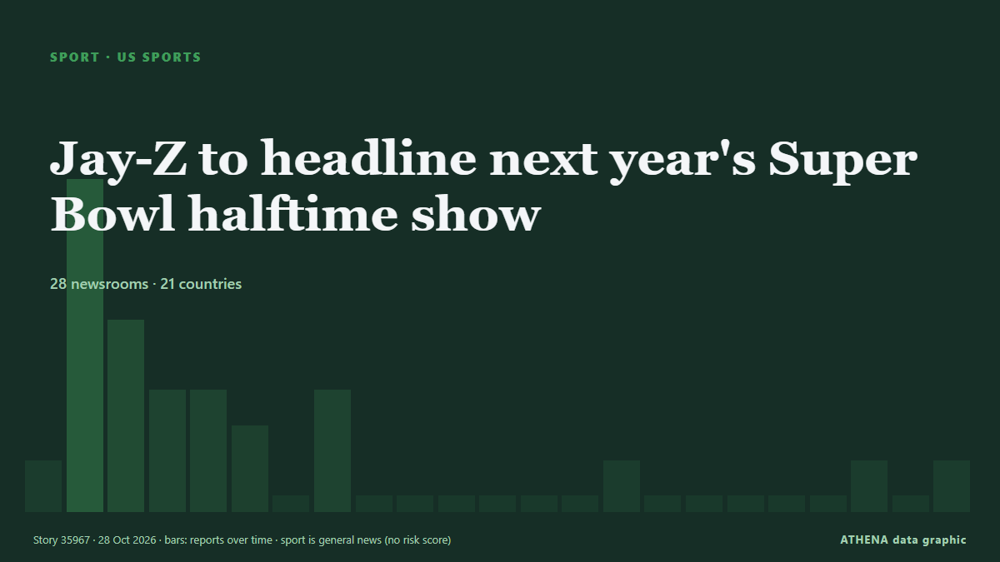

Jay-Z to headline next year's Super Bowl halftime show

LOS ANGELES, Oct 26 (Reuters) - Jay-Z will headline the 2027 Super Bowl halftime show in February, the National Football League announced on Monday. από Daily Maverick
Αναφέρθηκε ανεξάρτητα από 28 μέσα σε 21 χώρες από τις 27 Οκτ, πρώτο το MyJoyOnline· η κάλυψη έχει ηρεμήσει. Τα αθλητικά και τα πολιτιστικά καταχωρούνται χωρίς εκτίμηση κινδύνου. Βεβαιότητα 89% (υψηλή): το επιβεβαιώνουν 28 ανεξάρτητα μέσα, μέση αξιοπιστία 73%. Μέσα ανά χώρα: Ηνωμένες Πολιτείες (4), Ηνωμένο Βασίλειο (2), Νότια Αφρική (2). Κάλυψη: 27 Οκτ έως 28 Οκτ, 45 ώρες.
Τι άλλαξε: 3 νέες αναφορές από 3 μέσα στο 24ωρο έως 28 Οκτ.
Οι τίτλοι των ειδήσεων παρουσιάζονται στα αγγλικά, όπως δημοσιεύτηκαν.
Με μια ματιά
Επιλέγεται, βαθμολογείται και γράφεται από τη δημοσιευμένη μεθοδολογία του ATHENA. Κανένας συντάκτης δεν παρεμβαίνει σε μεμονωμένα γεγονότα. Πώς παράγεται ›
| 27 Oct 00:12 UTC | 1 |
|---|---|
| 27 Oct 02:12 UTC | 9 |
| 27 Oct 04:12 UTC | 5 |
| 27 Oct 06:12 UTC | 3 |
| 27 Oct 08:12 UTC | 3 |
| 27 Oct 10:12 UTC | 2 |
| 27 Oct 12:12 UTC | 0 |
| 27 Oct 14:12 UTC | 2 |
| 27 Oct 16:12 UTC | 0 |
| 27 Oct 18:12 UTC | 0 |
| 27 Oct 20:12 UTC | 0 |
| 27 Oct 22:12 UTC | 0 |
| 28 Oct 00:12 UTC | 0 |
| 28 Oct 02:12 UTC | 0 |
| 28 Oct 04:12 UTC | 1 |
| 28 Oct 06:12 UTC | 0 |
| 28 Oct 08:12 UTC | 0 |
| 28 Oct 10:12 UTC | 0 |
| 28 Oct 12:12 UTC | 0 |
| 28 Oct 14:12 UTC | 0 |
| 28 Oct 16:12 UTC | 1 |
| 28 Oct 18:12 UTC | 0 |
| 28 Oct 20:12 UTC | 1 |
Γιατί αυτοί οι αριθμοί
Σημασία
Κίνδυνος
Βεβαιότητα
Η κάλυψη — ποιος το ανέφερε και πότε
ο τίτλος όπως δημοσιεύτηκε · ανοίγει το πρωτότυπο- MyJoyOnline · ΓκάναJay-Z picks himself to headline the Super Bowl halftime show
- Pitchfork news · Ηνωμένες ΠολιτείεςJay-Z Confirmed for Super Bowl 2027 Halftime Show
- CNA (Channel NewsAsia) · ΣιγκαπούρηAmerican rapper Jay-Z to headline next year's Super Bowl halftime show
- Jamaica Observer · ΤζαμάικαJay-Z to perform at Super Bowl LXI halftime show
- BBC News · Ηνωμένο ΒασίλειοJay-Z to perform at Super Bowl half-time show
- Free Malaysia Today · ΜαλαισίαJay-Z to perform at Super Bowl LXI halftime show
- CBC News (alternative feed) · ΚαναδάςJay-Z to headline 2027 Super Bowl halftime show
- Daily Maverick · Νότια ΑφρικήJay-Z to headline next year’s Super Bowl halftime show
- The National · Ηνωμένα Αραβικά ΕμιράταJay-Z to headline Super Bowl 2027 half-time show
- Evening Standard (London) · Ηνωμένο ΒασίλειοJay-Z to headline 2027 Super Bowl halftime show: 'It's a dream come true'
- Nile Post · ΟυγκάνταJay-Z to perform at Super Bowl half-time show
- Gulf News · Ηνωμένα Αραβικά ΕμιράταJay-Z to headline Super Bowl LXI halftime show in 2027 in historic first
- RTÉ News · ΙρλανδίαJay-Z to headline 2027 Super Bowl half-time show
- NPR · Ηνωμένες ΠολιτείεςJay-Z picks himself to headline the Super Bowl halftime show in Southern California
- ABC News Australia · ΑυστραλίαMusic mogul Jay-Z picks himself to perform at next Super Bowl
- Anadolu Agency (English) · ΤουρκίαJay-Z picks himself as US' Super Bowl LXI halftime performer
- IOL · Νότια ΑφρικήJay-Z confirmed for Super Bowl LXI halftime show
- Channels TV · ΝιγηρίαJay-Z To Perform At Super Bowl LXI Halftime Show — NFL
- Asharq Al-Awsat (English) · Σαουδική ΑραβίαJay-Z to Perform at Super Bowl LXI Halftime Show
- Oman Observer · ΟμάνJay-Z to perform at Super Bowl halftime show
- Channels TV · ΝιγηρίαJay-Z Announced As Super Bowl LXI Halftime Show Headliner
- Times of India · ΙνδίαSuper Bowl halftime show headliners from 2020 to 2027: Shakira to Jay-Z
- The Hill · Ηνωμένες ΠολιτείεςJay-Z selected as Super Bowl LXI halftime performer
- Fortune · Ηνωμένες Πολιτείες‘How do you pick yourself?’ Jay-Z once turned down the Super Bowl. Now he’s headlining the show he produces
- FBC News · ΦίτζιJay-Z to headline next year’s Super Bowl halftime show
- Ada Derana · Σρι ΛάνκαJay-Z to headline next year's Super Bowl halftime show
- Colombia One · ΚολομβίαJay-Z to Headline the Super Bowl 2027 Halftime Show